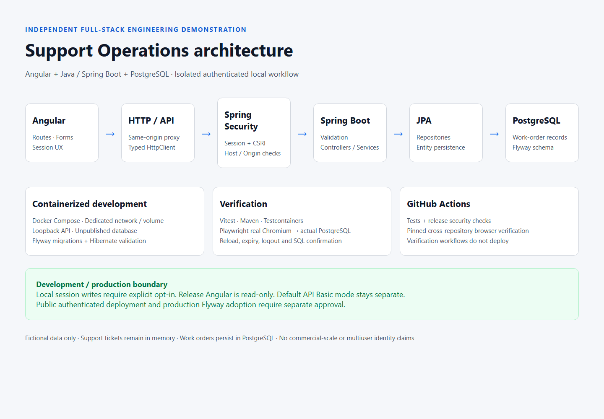
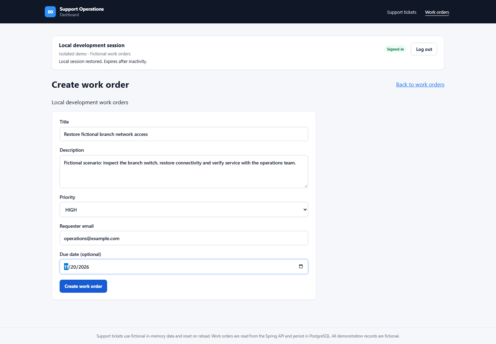

Independent Full-Stack Engineering Project
Support Operations — Full-Stack Engineering Case Study
An Angular 22/TypeScript frontend connected to a Java 21/Spring Boot 3.5 API and PostgreSQL, with a locally verified authenticated work-order workflow.
I developed this technical demonstration independently, separate from Parsons employment and commercial client engagements. It connects browser interaction, server validation and database persistence, with verification across all three tiers.
The authenticated full-stack work-order workflow was verified locally and is not publicly deployed. The public frontend and API are separate, earlier demonstrations.
From interface to persistent workflow
The original fictional support-ticket module stores data in memory and resets on reload. That demonstrates interface behavior but cannot show durable application state or server authorization. I added a separate work-order module backed by the Spring API and PostgreSQL, preserving the ticket demonstration.
Architecture and ownership
Angular → typed HTTP services / same-origin development proxy → Spring Security → Spring Boot controllers and services → Spring Data JPA → PostgreSQL.
Angular owns routes, RxJS-based HTTP handling, reactive forms, loading/error states and session presentation. Spring owns authorization, REST validation, filtering, pagination and status changes. JPA maps work-order entities; PostgreSQL is the authoritative store. The development proxy connects the local browser and API through one origin.

Implementation
The work-order list uses server-driven status/priority filters and pagination. Detail routes retrieve persisted records. A reactive create form checks inputs for usability; independent backend validation protects data integrity and returns field errors for the UI to display.
Typed request/response handling makes the HTTP contract explicit. Loading, empty and error states keep failures understandable. Authenticated local users can create orders and update status, then reload to retrieve the saved data. Failed mutations are not automatically retried because an ambiguous response could hide a completed write.

Significant engineering decisions
- Durable data and explicit schema ownership
- PostgreSQL makes persistence testable beyond browser memory. Flyway manages development schema changes while Hibernate validates the schema, avoiding implicit runtime creation. Production schema adoption remains separately gated.
- A real database in integration tests
- Disposable PostgreSQL Testcontainers check migrations and JPA behavior against the database engine used by the application, complementing faster controller/service tests.
- Separate authentication modes
- Existing API-client Basic authentication remains the default. Explicitly guarded local browser sessions provide restoration, inactivity expiry and server-side logout without changing the public API contract.
- Session and CSRF protections with different jobs
- An HttpOnly session cookie keeps the session identifier out of application JavaScript. A separate CSRF token/header protects unsafe requests; strict cookie and loopback Host/Origin checks constrain the local workflow.
- Reproducible isolation and a guarded release
- Docker Compose provides a dedicated network/database volume, loopback API and unpublished database. The Angular release excludes local login and API write controls.
Verification across browser, API and database
Automated Testing & Verification
45 backend tests · 75 Angular tests · 2 Chromium browser E2E tests passed
Automated verification combines Maven/JUnit and Spring Boot tests, real PostgreSQL integration testing with Testcontainers and Angular unit tests. Playwright drives real Chromium against actual Angular, Spring Boot and PostgreSQL; the browser workflow is not mocked.
Acceptance covers creation, validation, status changes, reload/session restoration, inactivity expiration and logout. Independent SQL assertions confirm persistence and rejected-write behavior. Release build/security gates check that local authentication and mutation controls are absent. GitHub Actions runs CI verification across these layers.
Results and limits
The result is a functioning full-stack demonstration with source, architecture and automated evidence. It uses single-user development authentication and has no demonstrated commercial scale. Production Flyway adoption requires separate approval.
The public Angular frontend demonstrates the fictional ticket UI; the newer integrated work-order workflow is available only in the local demonstration. The separate public API exposes GET data and existing Basic-protected write endpoints for API clients.